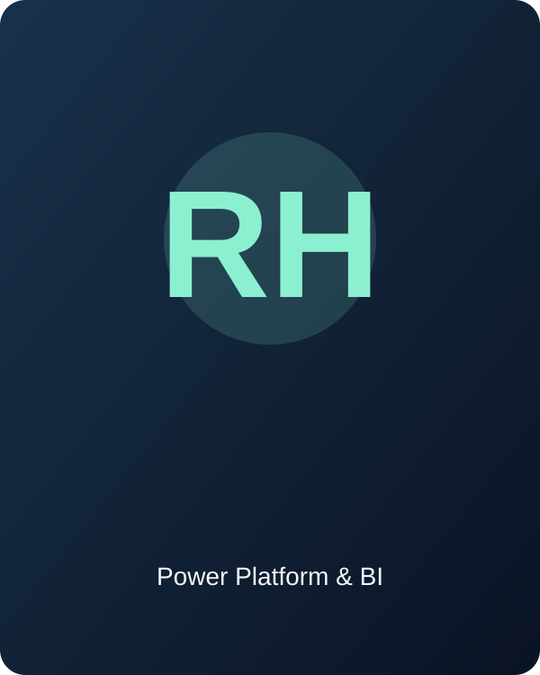

01
Power Apps
Canvas Apps, Power Fx, Forms, Galleries, Collections, Patch, custom components and role-based access.
POWER PLATFORM • POWER BI • AUTOMATION
I’m Ritam Hazra, a Power Platform Developer and BI professional at EY-GDS. I build business applications, automate workflows and create dashboards that help teams work smarter.

Power Platform
& Business Intelligence
ABOUT ME
I develop solutions across Microsoft Power Apps, Power Automate and Power BI, with experience in SharePoint, Dataverse, Power Fx, DAX, Power Query and Power Platform solution management.
My work includes monitoring applications, SOC report tracking, MFA monitoring, application lifecycle management, resource utilization, cost management and opportunity tracking. Project descriptions are generalized to protect confidential information.
CAPABILITIES
Canvas Apps, Power Fx, Forms, Galleries, Collections, Patch, custom components and role-based access.
Approvals, scheduled workflows, automated emails, JSON parsing, HTTP requests, error handling and integrations.
DAX, Power Query, data modeling, relationships, star schema, Row-Level Security and Power BI Service.
Managed and unmanaged solutions, solution layers, environment variables, connection references, SQL, Python and Alteryx.
SELECTED PROJECTS
Client-facing Canvas App with role-based access, report status tracking, document uploads, approvals, escalations and automated notifications.
Solution supporting development, testing and production tracking, deployment troubleshooting, automated reminders and MFA audit tracking.
Power BI reporting for opportunity pipelines, engagement stages and forecasting using DAX calculations, historical data and business rules.
Applications and dashboards for solution repositories, resource utilization, cost management, charged hours and operational monitoring.
EXPERIENCE
Senior 1 / Senior Analyst / Assistant Manager · July 2023 – Present
LET’S CONNECT
For opportunities involving Power Platform, Power BI, business intelligence or automation, feel free to reach out.